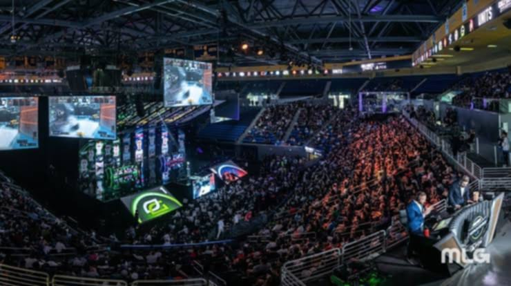

EVENTS OF THE CLUB
Get ready to Start Your Story with our very own Mobile Legends: Bang Bang Esports Club Event, inspired by the MPL Philippines! This exciting tournament will bring together students from all grades to battle it out in intense 5v5 matches, showcase their strategies, and prove their skills just like the pros.

A thrilling Call of Duty: Mobile esports tournament where top teams from around the world clash on a grand stage, showcasing intense skill, sharp strategy, and lightning-fast reflexes. The arena is alive with energy as huge screens display every epic moment, while live commentators amplify the excitement with expert play-by-play. Fans fill the seats, waving banners and cheering for their favorite teams, creating an electrifying atmosphere that celebrates the passion and community of competitive gaming.
Mobile Legends (ML) gaming event held in a school setting. Students in uniform are gathered in a function room, seated around tables, actively participating in matches using their mobile phones. A large monitor at the center displays an ongoing ML game, allowing others to watch the live gameplay. The setup includes a projector and podium in the background, suggesting the event is organized and possibly part of a club activity or friendly tournament. The atmosphere appears lively yet focused, with players concentrating on their strategies and enjoying a shared passion for e-sports.
CLUB CREATOR:KYLE NICOLAS D. SULTAN
ONLY STUDENTS OF SCHOOL ARE ALLOWED
ALSO LOOKING FOR ACTIVE MEMBER
FOR MORE INFORMATION CONTACT US:09813869296